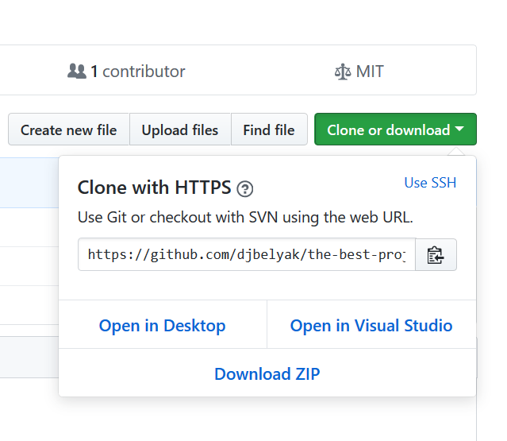
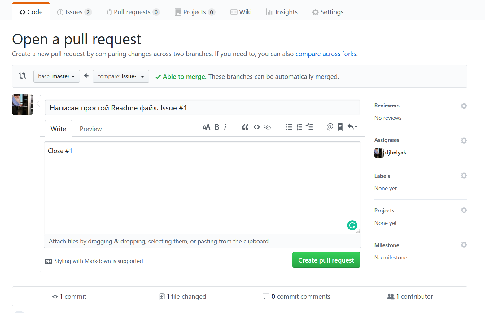
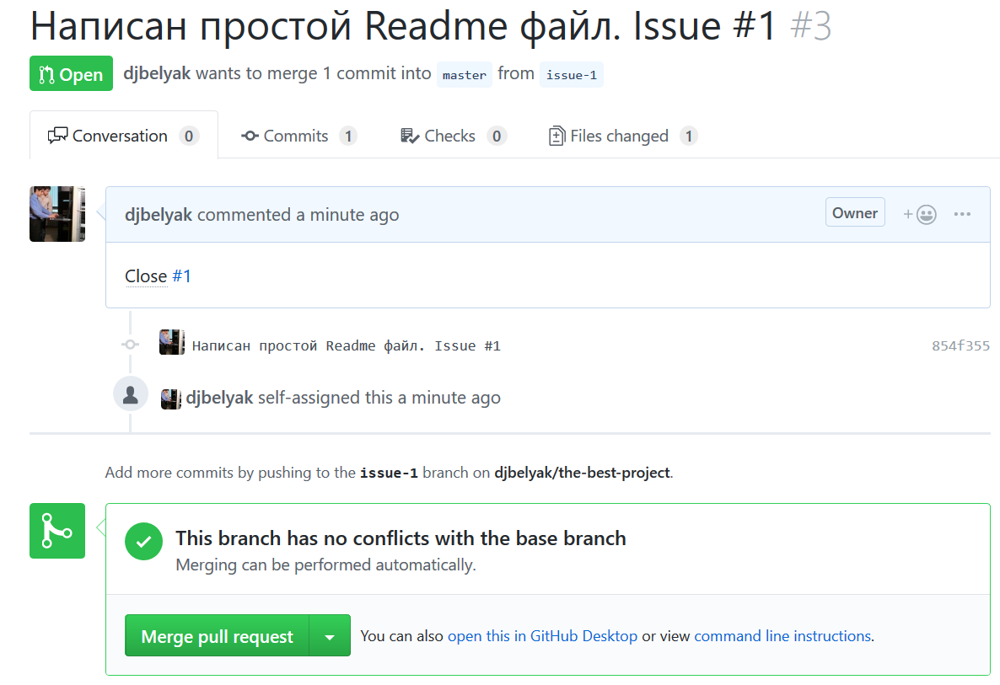
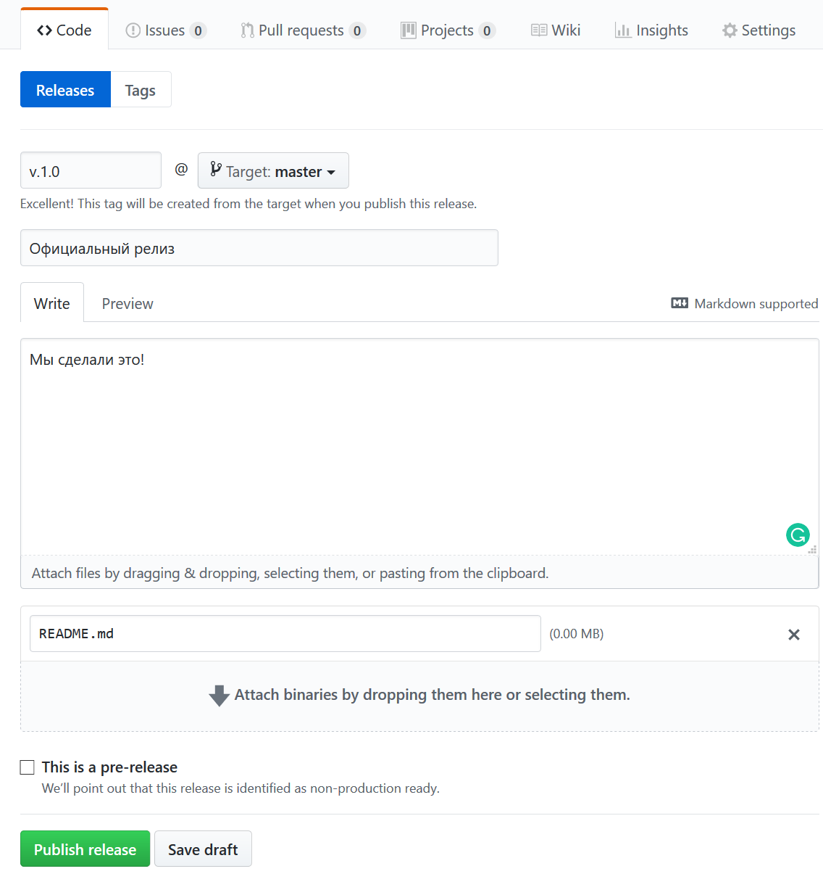

Лекция №2. Платформа для разработчиков GitHub
Курс "Инструменты проектного управления"
Иван Павлович Белявцев
4.12.2018
Административная часть
- Лекция №2: 4.12.2018
- Лекция №3: 18.12.2018
- Зачет: тест
В предидущих сериях
- Система контроля версий Git
- Локальная работа
- Тема коллаборации и бекапов не раскрыта
Что такое Github
https://github.com
- Внешний сервер для репозитория
- Readme
- Wiki
- Issue tracker
- Pull requests
- Release storage
Рабочий процесс
- Начало проекта
- Планирование проекта
- Работа над задачами
- Объединение рабочего кода
- Релиз
Клонирование репозитория

> git clone https://github.com/djbelyak/the-best-project.git
План работы над задачей
- Получить свежие изменения из origin репозитория
- Создать ветку для работы над задачей
- Делать коммиты и отправлять на origin, пока задача не будет решена
Получение свежих изменений
> git pull origin
или
> git fetch origin
> git checkout master
Создать ветку для работы над задачей
> git checkout -b issue-1
Делать коммиты и отправлять на origin, пока задача не будет решена
> git add Readme.md
> git commit -m "Написан простой Readme файл. Issue #1"
Если ветки нет на github
> git push --set-upstream origin issue-1
Если ветка есть на github
> git push origin
Объединение рабочего кода
Создание pull request

Слияние веток - простой случай

Слияние веток - разрешение конфликта
> git checkout issue-2
> git pull origin master
Объединить файлы в которых произошел конфликт
> git add README.md
> git commit -m "Исправлен merge conflict #4"
> git push origin issue-2
Что нужно проверить после merge
- Решаемая задача закрыта
- Рабочий репозиторий переключен на ветку
master
> git checkout master
> git pull
Создать tag
> git checkout master
> git tag -a v.1.0 -m "Версия 1.0"
> git push --tags
Создать описание релиза
